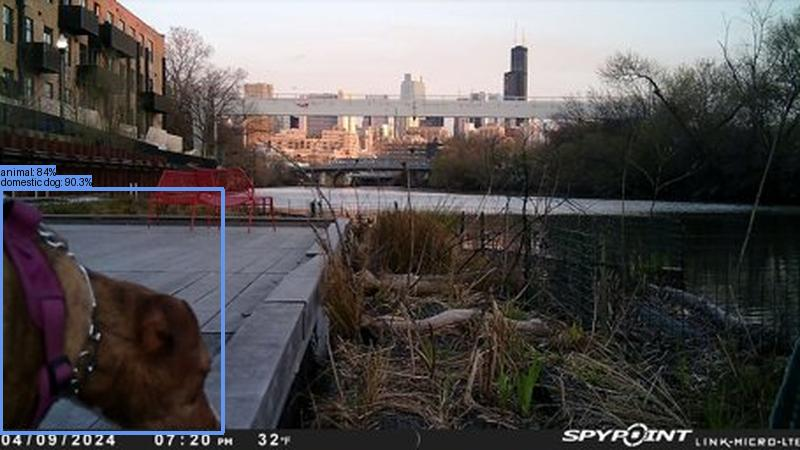
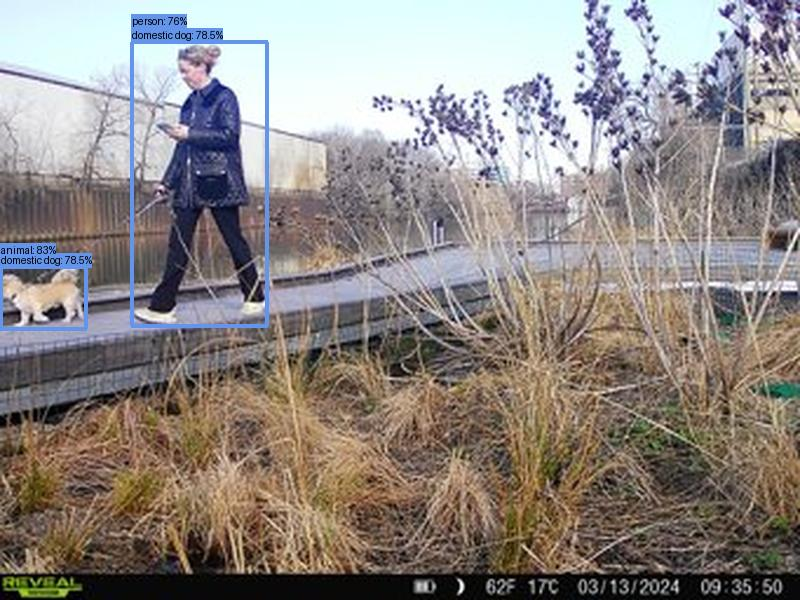
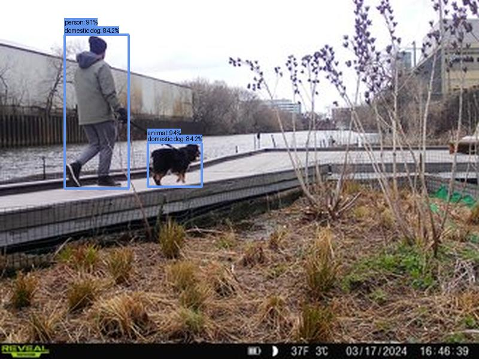

Result type: detections_animal, image: images/batch_2/2024-03-23_WildMileNorth--SYFW1751.JPG, max conf: 0.821
Result type: detections_animal, image: images/batch_2/2024-04-13_ZoneD--PICT0162.JPG, max conf: 0.836
Result type: detections_animal_person, image: images/batch_2/2024-03-23_WildMileNorth--SYFW1837.JPG, max conf: 0.828
Result type: detections_animal_person, image: images/batch_2/2024-03-23_WildMileNorth--SYFW2238.JPG, max conf: 0.941
